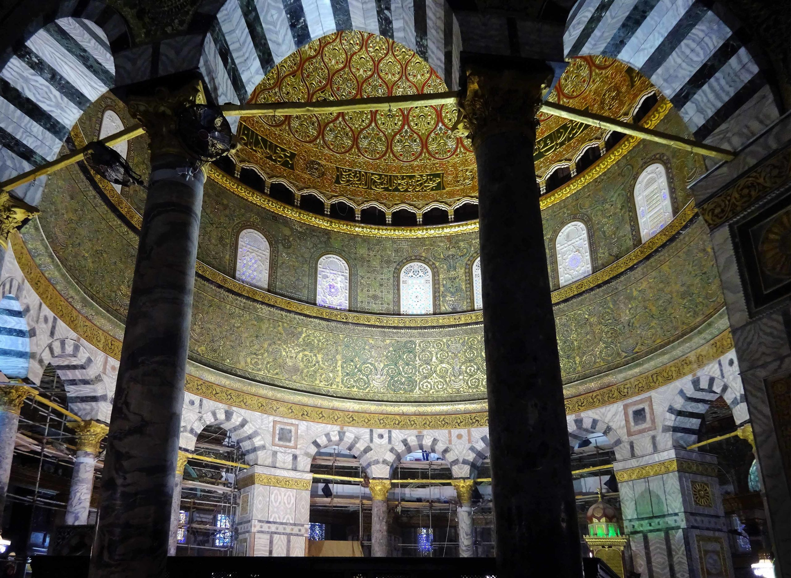

الهوية البصرية لمشروع تأسيس وعي المسلم المعاصر
كراسة طالب في حلقة العمود. يكتب بالقلم أبو أربع ألوان، ويرصّ طوبة كل أسبوع، ولا يكتب فكرة من غير سندها في الهامش.
م. أيمن مهندس يشرح بالرسم على السبورة. ورق مربعات، هامش أحمر، قلم جاف.
«مدرسة شيخ العمود… مش شخص، ده كونسبت». حلقة العلم حول العمود هي الشعار.
«جمع طوب وما بنى بيت». كل أسبوع طوبة، وكل فكرة لها ختم سند.
عمود التقدم: ٨ صفوف × ٤ طوبات + رباطا التنفس (١٧ و٢٦). انقر طوبة لترصّها.
اللون وظيفة لا زينة. كل لون له دور واحد في الدورة كلها.
كل علم بيجاوب سؤال، واللي يجاوب بكل علم عن كل سؤال بيبوظ الاتنين.
زي واحد ماسك مفتاح إنجليزي، وكل ما يشوف مشكلة يقولك: دي مسمار!
﴿الَّذِي عَلَّمَ بِالْقَلَمِ عَلَّمَ الْإِنسَانَ مَا لَمْ يَعْلَمْ﴾
كل أسبوع يُبنى من هذه القوالب فقط، بمحتوى الأسبوع ١ مثالًا. الهامش الأحمر على اليمين، والسند فيه.
المرحلة ١ · بناء المتلقي — الوحدة ١ · الأسبوع ١
نصوص مستوحاة من أسلوب المهندس أيمن عبد الرحيم في الشرح، كُتبت لأغراض تدريبية داخل مشروع تأسيس، وليست قولًا منسوبًا إليه.
تصور معايا راجل ماسك حزمة كروت… والكروت دي مترتّبة.
وواحد تاني متحمس مسك الحزمة وخضّها وبدأ يسحب عشوائي. أهو ده بالظبط اللي بيحصل لنا كل يوم على السوشيال ميديا.
كل علم بيجاوب جزء من السؤال. اللي يجاوب بعلم واحد عن كل الأسئلة بيبوظ الاتنين.
الفيزياء بتقولك العالم المادي شغال إزاي، والتاريخ بيقولك الناس عملت إيه لما جربت، والفقه بيقولك الشرع أمر بإيه، والطب النفسي بيقولك المخ بيتصرف إزاي.
مصيدة المفتاح الإنجليزيواحد ماسك مفتاح إنجليزي، وكل ما يشوف مشكلة يقولك: دي مسمار!
اختر كارتين لتبديل مكانهما، ثم «تحقق».
﴿الَّذِي عَلَّمَ بِالْقَلَمِ عَلَّمَ الْإِنسَانَ مَا لَمْ يَعْلَمْ﴾
السند أقدم خريطة: مصدر ← ناقل ← محتوى ← درجة.
في الأول قلت إن آخر حاجة عرفتها «لسه على الرف». خريطة الأعمدة الأربعة هي أول خطوة تنزّلها من الرف.
مهمة الأسبوعسؤال واحد، خريطة أعمدة أربعة، وعادة ١٠ دقائق لمدة ١٤ يوم. وما تقولش لحد.
كل نمط مأخوذ من أداة يستعملها أيمن في الشرح. كلها تكوينية بلا درجات. المحتوى هنا من نصوص v0.4 نفسها.
ثلاثة أنواع فقط: رسم مفاهيمي SVG، رسم خطاف مولد بلا نص ولا وجوه، وصورة مكتبة بمعالجة «حبر على ورق».
